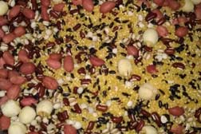
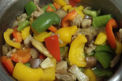
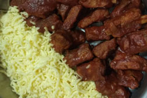
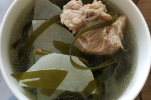

健康的食材
多彩丰富的杂粮，混搭在一起，健康营养，富含人体所需的各种矿物质、蛋白粉、碳水化合物，每天早上来一碗，能量满满的...
Read »
 五彩茄丁肉
看到这有红黄绿搭配的五彩茄子肉沫是不是很有食欲呢？O(∩_∩)O哈哈~~
Read »
 拔丝排骨
排骨怎么吃？红烧排骨、炖排骨还是排骨汤？什么，这些都吃腻了？那就来换换全新口味吧！还可以纵享丝滑哦...
Read »
 海带萝卜汤
好喝的海带萝卜汤才是真爱啊…这碗清热解毒、健胃消食、降血脂的汤，无论是外观还是深藏的本质都是令人满满的喜欢...
Read »